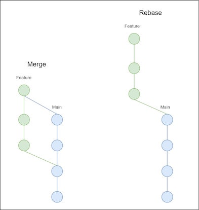

| Command | Description | |
|---|---|---|
| 243 | git rebase |
Different way of integrating changes from two branches |
| 244 | git stash |
Stores made changes for later use |
| 245 | git rm |
Removes tracked files from your directory |
| 246 | git clean |
Deletes untracked files from your directory |
8 Stashing and rebasing
Overview
Duration: min
Objectives
- Resolving conflicts with stashed changes
- Cleaning your working directory
- Introduction to rebasing
8.1 Acknowledgements
8.2 Cheatsheet
8.3 Exercises
8.3.1 Stashing Changes:
Create a new branch called feature/stash-exercise.
Make changes to two different files in your project directory.
Run git status to see the changes and their status.
Stash your changes without adding a message.
Use git status again to check that your working directory is clean.
Apply the stash to your working directory and verify that your changes are restored.
8.3.2 Basic Rebasing:
Create a new branch called feature/rebase-example.
Make a three commits with minor changes on the feature/rebase-example branch.
Switch to the main branch and make additional changes.
Rebase feature/rebase-example onto main using
git rebase main.Check the commit history with git log to see the updated order of commits.
8.4 Stashing things for later use
Git stash is a valuable command in Git that allows you to save your current changes temporarily without committing them. This is useful when you need to switch branches or work on something else without creating a commit for unfinished work. For example, when you’re working on a feature and you need to switch to a different task quickly or your work gets interrupted unexpectedly, you may not want to commit your unfinished changes. When you run git stash, Git stores the changes in your working directory and staged changes in a special stash commit. The working directory is then reverted to the last committed state, providing a clean slate for your next task
8.5 Git stash workflow
8.5.1 Stashing changes
To demonstrate the usefulness of git stash, you can edit one or more files in your repo, stage or don´t stage yor changes, but don´t commit them. Now use git status to look at your working directory.
git statusshould get an output similar to:
Changes to be committed:
(use "git reset HEAD <file>..." to unstage)
modified: example.html
Changes not staged for commit:
(use "git add <file>..." to update what will be committed)
(use "git checkout -- <file>..." to discard changes in working directory)
modified: example.txt In this example, there are changes on two tracked files, one staged ,one unstaged that we want to stash. Just like when committing, it is possible to add a message when stash using the -m flag. It makes sense to add a message because it serves as a reminder of what changes were stashed, making it easier to identify the purpose of the stash when you later list or apply stashes.
git stash -m "feature X WIP"should get an output similar to:
Saved working directory and index state On feature: "feature X WIP"You can now use git status to again look at your working directory and should see an output similar to:
On branch main
nothing to commit, working directory cleanNow you can switch branches and work elsewhere or stop working on the project altogether.
8.6 Retrieving changes
If you want to reapply your changes, you can use git stash apply. To look at all your stored stashes, you can use git stash list.
git stash listshould get an output similar to:
stash@{0}: On feature: feature X WIPAll of your stored stashed should show up, with the most recent on top.
git stash apply automatically applies your latest stash. You can also specify a stored stash, e.g. ` git stash apply stash@{0}``
git stash apply stash@{0}should get an output similar to:
On branch main
Changes not staged for commit:
(use "git add <file>.. ." to update what will be committed)
(use "git checkout -- <file>..." to discard changes in working directory)
modified: example.html
modified: example.txt
no changes added to commit (use "git add" and/or "git commit -a")The changes made in your stored stashed are now applied again in your working directory. Notice that your already staged files, are not automatically staged again.
Common git stash flags
git stash -m "message": Save your changes in a stash with an message.
git stash apply stash@{n}: Apply the changes from the specified stash (identified by its index n) to your working directory.
git stash pop stash@{n}: Apply the changes from the specified stash (identified by its index n) to your working directory and remove the stash from the stash list.
git stash list: List all the stashes you have created, showing their reference numbers and stash messages.
git stash drop stash@{n}: Remove the specified stash (identified by its index n) from the stash list.
git stash branch <branchname>: Create a new branch named
git stash show stash@{n}: Show the diff of the changes stored in the specified stash (identified by its index n).
8.7 Removing changes or files
8.7.1 Discarding changes in the working directory:
Git makes it also possible to revert files back to the state of your last commit. This could e.g. be useful when you realizethat the recent changes you made to the script have introduced a bug You can use git restore to discard changes in the working directory and revert the files to the state they were in when you last committed them.
git restore <file>Please note that it may not be possible to undo the restore, since Git does not keep track of the state before the restore operation.
8.7.2 Unstaging files
You can also use git restore with the --staged flag to unstage files, you have previously added to the staging area. This can be useful when you accidentally staged files or want to reorganize your commit.
git restore --staged <file>8.7.3 Deleting files
If you want to delete files from your working directory and your git repository, it makes sense to use the git rm command. This command removes files from your working directory and automatically stages this change for your next commit.
git rm <file>git commit -m "deleted file XY"
Common git rm flags
-f or --force: This flag forces the removal of files, even if they are modified.
-r or --recursive: Use this flag to remove directories and their contents.
--cached: This flag removes files from the staging area (index) but preserves them in the working directory.
-n or --dry-run: With this flag, Git will only show you what would be removed but will not actually perform the deletion.
8.7.4 “Untracking” files
Sometimes, you may have files, in your Git repository that you no longer want to track or include in future commits, but want to keep in your local working director. It makes sense to include these files in your .gitignore file, as discussed in the First steps chapter You could also use git rm with the --cachedflag.
git rm --cached <file>8.8 Git rebase
git rebase is a different way than a merge to integrate changes from one branch into another. When you rebase the feature branch onto the main, branch you kind of “rearrange” the commits. It’s like taking your changes, applying them on top of the latest main branch, and making it all look like a smooth line. The new commits you made in the feature branch are still there, but they appear as if they were created after the latest changes in the master. It’s like picking up your changes and placing them on the latest code, resulting in a linear history. Like shown in Figure 8.1.

{kind=link}
However, you should use rebase with caution when collaborating with others, as it can rewrite commit history and create conflicts for teammates.
git rebase main
Common git rebase flags
--interactive or -i: Start an interactive rebase, allowing you to edit, reorder, or squash commits interactively.
--continue: Continue the rebase after resolving conflicts or editing commits during an interactive rebase.
--abort: Abort the current rebase operation and return the branch to its original state before the rebase.
--skip: Skip the current commit during an interactive rebase.
-p or --preserve-merges: Preserve merge commits during the rebase.
--autosquash: Automatically squash commits marked with “squash” or “fixup” in their commit message during an interactive rebase.